SimpleOPD：面向长上下文推理的 tokenizer 无关 on-policy 蒸馏
SimpleOPD 研究的是一个很具体、也很容易在实际后训练中遇到的迁移场景：教师模型能够生成十万 token 以上的长证明链，学生模型的上下文和响应预算却短得多，而且两边还可能属于不同模型家族、使用不同 tokenizer。论文由 Haonan He、Haodi Lei、Yun Luo 等作者完成，作者均来自上海人工智能实验室 SU-01 团队；工作于 2026 年 8 月 14 日提交 arXiv，并在 8 月 17 日进入公开列表。论文入口为 arXiv:2608.14277。作者同时公开了项目页与代码仓库，仓库给出基于 Slime 与 SGLang 的实现、启动脚本、参数说明以及模型集合入口，因此代码状态不是“只在论文中承诺”，但本文涉及的大规模教师服务和完整算力条件仍需复现者自行准备。
当长上下文教师与短上下文学生使用不同 tokenizer 时，传统 OPD 既没有天然的一一 token 对应，又会把教师的超长推理偏好压到学生策略上；直接训练因此可能出现回复长度爆炸、终止 token 消失、频繁截断和优化失稳。
1. 背景和问题
知识蒸馏常被理解为“让学生模仿教师答案”，但 on-policy distillation（OPD）的关键并不是把教师提前生成的固定轨迹当作监督数据，而是让学生先按当前策略采样自己的响应，再请教师逐 token 评价这条学生轨迹。这使训练信号始终落在学生真实会访问的状态分布上：学生犯了什么错误、在哪个位置概率分配不合理，教师就能在这些位置提供稠密反馈。相较离线 SFT，OPD 不需要学生完全追随一批静态教师轨迹；相较只有最终正确性奖励的 RLVR，它又能得到更细的 token 级信号。对数学证明这类长链任务，这一点尤其重要，因为最终答案错误并不能告诉学生到底是定义选择、引理调用还是结束时机出了问题。
以往 OPD 工作大多默认 teacher 与 student 属于同一模型家族，至少共享 vocabulary。此时一条响应在两边被切成相同 token，学生第 $t$ 个 token 的 log-probability 可以直接和教师第 $t$ 个 token 比较。但异构模型没有这个便利。同一个字符串可能在教师侧是一个 token，在学生侧被拆成三个 token，也可能反过来；把一个 token 的概率随意平摊给另一侧多个 token 没有概率论上的唯一依据，把多个 token 的概率简单相加也会混入条件上下文差异。已有 byte-level 或动态映射路线可以构造更细接口，但通常需要额外转换规则或模型。SimpleOPD 选择一条更保守的路：只在两种切分恰好覆盖同一文本起止位置、且增量字符串完全一致时传递教师监督，其余位置不强行匹配。
第二个难点来自能力和上下文预算的错位。教师 SU-01 是基于 Qwen3-30B-A3B 的长上下文推理模型，可以为困难奥数问题维持超过 100K token 的自然语言推理；学生训练时的最大 rollout 长度则按模型设置为 32K 或 6K。教师在学生已生成的短前缀上给出概率时，可能认为继续展开证明比结束更合适，于是 </think>、<|im_end|> 等结束结构得到持续负向信号。学生一旦降低结束概率，下一轮 on-policy 采样就会更长；更长的样本又包含更多继续推理的位置，形成自增强回路。表面上某个 benchmark 分数可能短暂上升，但响应重复、截断和无效自检也会同步恶化。
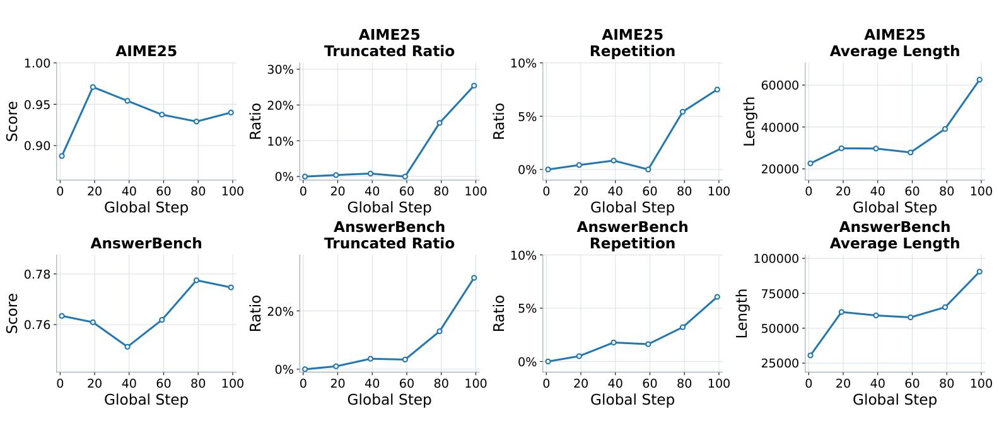
Figure 3 把 Intern-S2-Preview 的 direct OPD 过程拆成八条曲线：上排对应 AIME25，下排对应 AnswerBench，每排依次观察任务分数、截断率、重复率和平均长度。AIME25 分数早期上升后回落，而平均长度从约两万余 token 逐步冲到六万以上，截断率与重复率在后期明显抬头；AnswerBench 分数先降后回升，但平均长度接近九万，截断率也大幅增加。这组图最重要的地方不是某条终点分数，而是它揭示能力指标与生成健康度可以背离：如果训练监控只看答题得分，可能会把越来越长、越来越容易截断的策略误判为持续改进。论文在 Qwen3.5-35B-A3B 上观察到更严重的同类现象，说明问题并非 Intern-S2 单模型偶发。
因此，论文实际要回答三个相连的问题。第一，在不人为建立完整词表映射的前提下，怎样从异构教师获得有定义、可计算的 token 级监督；第二，怎样在同一批 student rollout 上做多次更新而不让策略跃迁失控；第三，怎样阻断“教师偏好长链—学生更晚结束—下一批轨迹更长”的正反馈，同时尽量不牺牲教师真正有价值的证明推理信号。SimpleOPD 的贡献不在一个复杂新网络，而在于把这三个工程约束收敛成共享文本 span 对齐、PPO clipped 更新、终止 token advantage 屏蔽和 student-reference KL四个彼此配合的部件。
2. 方法
2.1 学生 on-policy 轨迹与教师原生打分
输入 $x$ 是消息序列，学生与教师分别用自己的 chat template $C_\theta$、$C_\phi$ 构造上下文。训练首先让 rollout engine 中的学生策略采样响应，而不是让教师先写答案：
符号解释：$y_{1:n}$ 是学生响应 token 序列；$n$ 是学生 token 数；$c_\theta$ 是学生模板渲染出的文本上下文；$\pi_{\theta}^{\mathrm{roll}}$ 是采样时的学生策略。这个式子界定了 “on-policy”：教师监督的对象来自学生自己当前会生成的轨迹，而不是离线缓存的教师轨迹。学生 decoder $D_\theta$ 再把 $y_{1:n}$ 还原为表面字符串 $s$。教师端不会复用学生模板，而是先得到 $c_\phi=C_\phi(x)$，再把同一个 $s$ 拼到教师上下文后，使用教师 encoder $E_\phi$ 得到响应 token $z_{1:m}$。于是两侧 token ID 和切分方式不同，但被评价的响应文本完全相同：
符号解释：$\tau_\theta(y_t)$ 与 $\tau_\phi(z_i)$ 分别表示某个 token 解码后对响应新增的文本 span；$\bigoplus$ 表示依次拼接；$m$ 是教师侧 token 数。论文明确不做额外清洗或 normalization，避免两侧字符串在预处理阶段产生新的 offset 漂移。教师因此能在自己的模板、tokenizer 和参数分布下，对学生真实响应计算 $\log\pi_\phi(z_i\mid c_\phi,z_{<i})$。
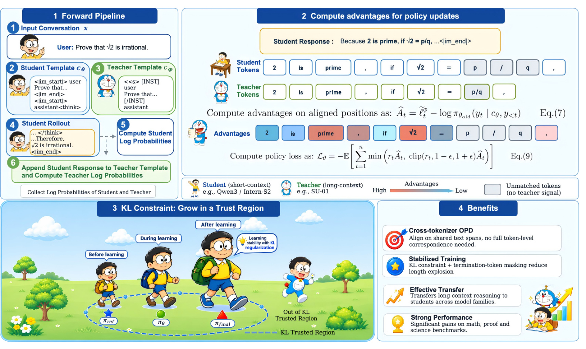
Figure 2 左上角是完整 forward pipeline：输入消息分别通过 student/teacher template，学生先 rollout，随后同一表面响应被追加到教师上下文，系统收集两侧 log-probability。右上角展示 advantage 计算，蓝色 token 获得教师监督，灰色 token 因切分不一致而不接收强制映射。左下角的“trust region”不是新增推理模块，而是 student-reference KL 对策略漂移的约束；右下角则总结训练收益。整张图也明确了训练和部署的区别：教师服务、双 tokenizer 对齐和 KL 目标只在蒸馏期存在，推理部署仍是一份普通学生模型，不增加在线 teacher 调用。
2.2 相同文本 span 的部分一一对齐
对齐从每个 token 前已消费的文本前缀开始。设 $P_\theta(t)$、$P_\phi(i)$ 分别是学生第 $t$ 个 token、教师第 $i$ 个 token 之前的响应字符串。只有当前缀相同、当前 token 新增的 span 也完全相同时，两侧位置才进入匹配集合：
符号解释：$\mathcal{M}$ 是 teacher/student token 对的部分一一映射；$P_\phi(i)=P_\theta(t)$ 保证起点一致；$\tau_\phi(z_i)=\tau_\theta(y_t)$ 保证终点和内部字符串一致。部分重叠不算匹配，因为一个教师 token 的条件概率没有唯一方式分配给多个学生 token，反向合并也同样含糊。由于两边都是同一字符串的有序切分，每个 token 最多匹配另一侧一个 token。
实现采用线性 two-pointer scan。两个指针从响应开头出发，维护已经消费的字符前缀；若前缀和当前 span 都相同，就记录匹配并同时前移；若一侧消费字符更少，就只推进较短的一侧，直到 offset 再次相遇；若 offset 相同但当前 span 不同，则两边都前移，放弃这一段的直接监督。这个过程的时间复杂度是 $O(n+m)$，没有词表笛卡尔积，也无需学习跨词表投影。SimpleOPD 的 tokenizer-agnostic 并不意味着所有 token 都能对齐，而是把“无法严格归属的概率质量”主动留空。
学生位置的对齐指示与监督覆盖率定义为：
符号解释：$a_t=1$ 表示学生第 $t$ 个 token 存在唯一 teacher span 匹配；$|\mathcal{M}|$ 是匹配对数量；$\rho$ 是学生 token 中实际获得教师监督的比例。$\rho$ 很关键：如果 tokenizer 差异使它很低，方法虽然数学上成立，训练信号却可能过稀。论文后来用 Figure 9 直接跟踪这一量，而不是只凭“共享字符串”宣称跨词表可行。接着把教师 log-probability 改写为学生长度的目标序列：
符号解释：$\widetilde{\ell}^{\phi}_t$ 是与学生第 $t$ 个位置对应的目标；匹配时取教师 log-probability，未匹配时回退为学生自身 log-probability。回退并不是把学生猜测伪装成教师监督，而是让该位置的初始概率差为零，从优化目标中“静默退出”。它避免错误映射，但也带来明确代价：tokenizer 差异越大，真正能转移的密集监督越少。
2.3 对齐位置上的蒸馏目标与 PPO 多步更新
基于学生长度目标，论文把跨 tokenizer 蒸馏写成对齐位置的 reverse-KL 代理：
符号解释：$L_{\mathrm{Distill}}$ 比较学生对已采样 token 的 log-probability 与对应教师目标；期望在学生策略生成的轨迹上计算。只有 $a_t=1$ 的位置真正含 teacher/student 差异。若 tokenizer 完全相同，则每个位置都对齐，目标退化为标准 reverse KL：
符号解释：$D_{\mathrm{KL}}(\pi_\theta\Vert\pi_\phi)$ 是从学生分布到教师分布的 reverse KL。该退化关系说明 SimpleOPD 不是另造一套与 OPD 无关的 loss；它是在异构 tokenizer 下，仅对可严格比较的位置保留标准目标。训练并非每采一批 rollout 只更新一次。论文每个 rollout step 做四次 policy update，因此要冻结 rollout 时的旧策略概率，构造 token 级 advantage：
符号解释：$\theta_{\mathrm{old}}$ 是生成该 batch 时的策略；$\widehat{A}_t$ 衡量教师相对旧学生更偏好还是更不偏好当前 token；$r_t$ 是当前策略相对旧策略的 importance ratio。未对齐位置的目标使用旧学生概率，使其固定 advantage 为零，防止在同一 batch 多次更新时回退项随当前参数变化而制造伪监督。最终使用 PPO clipped objective：
符号解释：$\epsilon$ 是裁剪半径，实验设置为 0.2；$\operatorname{clip}$ 限制同一 rollout batch 上多次更新造成的概率比跃迁；负号把最大化 clipped surrogate 写成最小化 loss。这个目标控制的是 batch 内更新稳定性，但它仍无法单独解决跨 batch 的持续长度漂移，因为教师对长链和终止位置的偏好每轮都会重新进入 advantage。
2.4 终止 token 屏蔽与 student-reference KL 稳定化
第一项长度干预是对 </think> 与 <|im_end|> 等结构终止 token 屏蔽 OPD advantage。直觉上，这些 token 决定“何时结束思考、何时结束答案”，而不是证明内容本身；若长上下文教师在学生结束位置仍偏好继续，就会不断把它们的概率压低。屏蔽后，teacher 不再直接教学生取消结束动作。需要强调的是，论文屏蔽的是这些特殊位置的蒸馏 advantage，不是删除 token、改写模板或在推理时强制截断，因此内容 token 仍能获得稠密教师监督。
第二项是当前学生与初始 student reference policy 之间的 KL loss，用来限制整个策略远离基座分布。论文没有给出一个编号的完整总损失公式，因此这里不把常见 KL 正则形式冒充原文表达；可核验的是，Qwen 系列与 Intern-S2 使用系数 0.5，GLM-4.7 和 Gemma-4 使用 1.0，并在 GLM 上进一步比较 0.5、1.0、1.2。它与 PPO clipping 的作用尺度不同：clipping 限制单批更新步幅，reference KL 则把跨许多 rollout step 的策略变化拉回初始行为邻域。如果 reference KL 太弱，长度爆炸仍可能累积；太强则会把学生锁在原策略附近，难以吸收教师推理能力。
两项措施必须合起来理解。termination masking 针对一个明确的失稳入口，保护学生正常结束；reference KL 针对全分布漂移，抑制其他 token 共同推动的长度扩张。它们都只在训练期改变优化信号，不给推理图增加模块。代价也很清楚：需要保存或访问 reference policy 的概率，训练显存和计算量上升；不同 teacher/student gap 需要重新调 KL 系数；而且屏蔽结构 token 意味着教师无法再教学生更好的结束格式，只能保留基座在这些位置附近的行为。
3. 实验结果
3.1 数据、模型与评测口径
教师 SU-01 是团队自研的 30B-A3B 长上下文证明推理模型。训练数据全部是数学证明题，包括 OPC 63 题、AoPS 2,948 题、在线竞赛书籍 900 题、Shuzhimi 论坛与 Evan Chen 材料 617 题，共 4,528 个 prompt。学生覆盖同 tokenizer 的 Qwen3-4B、Qwen3-30B-A3B，以及跨 tokenizer 的 Qwen3.5-4B、Qwen3.5-35B-A3B、Intern-S2-Preview、GLM-4.7-Flash、Gemma-4-26B-A4B。训练跑 100 个 rollout iteration，batch size 为 64，每个 prompt 采样 4 条响应，每批做 4 次 policy update，学习率 $10^{-6}$；Qwen 系列最大 rollout 32K，GLM/Gemma 为 6K。
评测包含自然语言证明 ProofBench、可验证 AnswerBench、AIME25 和 AMOBench。ProofBench 主表使用 DeepSeek-V4-Flash 作 judge，每条 proof rollout 评 4 次后取平均；Figure 1 另按 SU-01 设置使用 Gemini-2.5-Pro judge，所以“21.70→44.50”和“34.0→55.2”属于不同裁判口径，不能混成一次实验。AnswerBench、AIME25、AMOBench 先用规则 verifier，错答再交 GPT-OSS-120B 判断，报告 8 次 rollout 平均。评测最大响应长度设置为 160K，最佳 checkpoint 按 AIME@4 与 AnswerBench@1 的平均分选择。这个设置尽量容纳长链，但 judge 模型、重复采样和 checkpoint selection 也意味着结果不是一次确定性解码。
3.2 从直接 OPD 失稳到两类稳定化干预
只做 termination-token masking 时，学生不再直接接收教师对结束结构的负向 advantage，早期截断明显受控；但它没有约束内容 token 上的整体策略漂移，训练后期长度仍可能再次扩张。
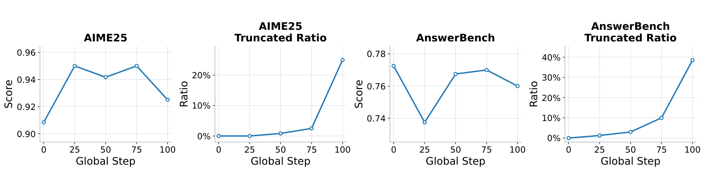
Figure 5 左右分别给出 AIME25 和 AnswerBench 的分数与截断率。两项分数并没有崩溃，AIME25 大体维持在 0.90 以上，AnswerBench 也在波动后恢复；但截断率在最后阶段突然抬升，AIME25 接近四分之一，AnswerBench 更高。这说明 masking 修复的是一个局部原因，而非全局分布漂移。若只汇报最后的答题分数，容易得出“训练已经稳定”的过早结论；把截断率并列监控后，才会发现学生仍在逐渐消耗完上下文预算。由于两条截断曲线都在后段才急升，早停或只观察前半程也会掩盖风险，稳定性验收必须覆盖完整 rollout 周期。
加入 student-reference KL 后，当前策略被约束在初始学生附近，长度正反馈明显被切断。
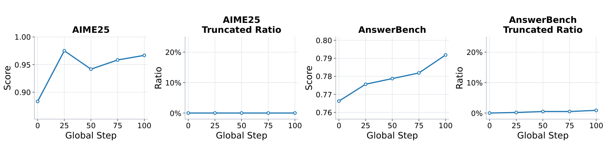
Figure 6 与 Figure 5 使用相同四面板布局，因此对照很直接：AIME25 从约 0.88 上升后稳定在更高水平，AnswerBench 逐步改善，两边截断率在整个训练过程中都接近零。Table 1 的静态结果也支持这一点：Intern-S2-Preview 基座的 ProofBench@4、AnswerBench@8、AIME25@8 分别为 21.70、76.03、88.33；OPD + Spec Mask 达到 38.10、77.60、95.00；OPD + Ref KL 达到 38.50、79.10、95.80。两种干预都能带来能力增益，但动态曲线表明 reference KL 对长程稳定更关键。
这组实验支持的结论应保持克制：它证明在当前 teacher/student 与数学数据上，reference KL 能显著降低截断；它没有证明所有长文本蒸馏都应使用同一系数，也没有直接比较固定算力下 masking、KL 带来的额外吞吐成本。终止 token masking 与 reference KL 的作用还不是完全正交，Table 1 分别报告两类设置，而最终 SimpleOPD 组合使用它们；更严格的 factorial ablation 会更有助于量化交互项。
3.3 同族、跨 tokenizer 与跨模型家族主结果
主结果首先回答“只对齐完全相同 span 会不会使监督太稀”。同 tokenizer 的 Qwen3-4B-OPD 在 ProofBench、AnswerBench、AIME25、AMOBench 分别比基座提升 12.30、17.00、19.58、12.00 分；Qwen3-30B-A3B-OPD 的对应增益为 22.67、15.33、5.42、16.25。跨 tokenizer 的 Qwen3.5-4B、Qwen3.5-35B-A3B 和 Intern-S2 也全部在四个主表指标上改善，其中 Intern-S2 的 ProofBench@4 从 21.70 到 44.50，几乎追平 SU-01 的 45.00。
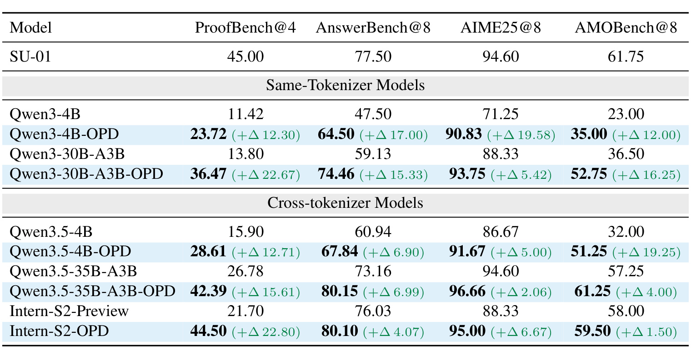
Table 2 必须按“绝对分数、基座差值、教师上限”三层读。Intern-S2-OPD 的 ProofBench 增益最大，但 AnswerBench 80.10、AIME25 95.00 已超过 SU-01 的 77.50、94.60，说明蒸馏不是把学生简单复制成教师：学生原有优势可能被保留，再叠加教师的证明能力。另一方面，AMOBench 上 Intern-S2 只从 58.00 到 59.50，远小于 ProofBench 的 22.80 分，方法更像定向转移自然语言证明能力，而非均匀提高所有数学任务。Qwen3.5-35B-A3B 的增益也表现为 ProofBench 更大、AIME25 较小，支持这一判断。
更异构的 GLM 与 Gemma 暴露了边界。SU-01 与 GLM 都使用 BPE，但词表不同；Gemma 使用 SentencePiece，分割差异更大。论文把 GLM/Gemma 的 reference KL 系数提高到 1.0，以应对更大的 teacher/student gap。
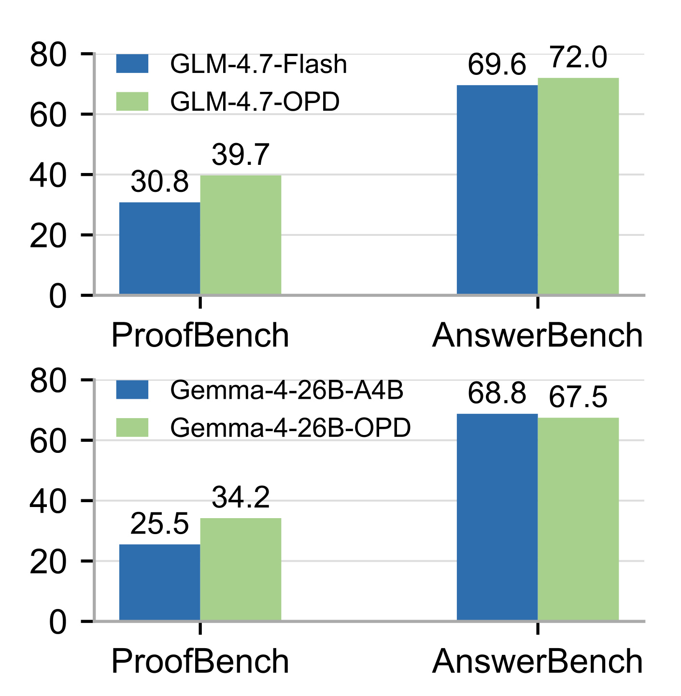
Figure 7 中，GLM-4.7-Flash 的 ProofBench 从 30.8 到 39.7，AnswerBench 从 69.6 到 72.0，两项都提升；Gemma-4-26B-A4B 的 ProofBench 从 25.5 到 34.2，但 AnswerBench 从 68.8 降到 67.5。这个负结果很重要：共享文本 span 的部分对齐确实能跨 tokenizer 转移证明能力，却不能保证学生所有能力同时改善。更低的匹配覆盖、不同 chat template、学生容量和 reference KL 强度都可能改变结果。因而“tokenizer-agnostic”应理解为方法不要求同词表，而不是效果对 tokenizer 差异完全不敏感。
另一套 Gemini-2.5-Pro judge 口径下，Intern-S2-Preview 在 ProofBench 从 34.0 提升到 55.2，增益 21.2，超过 Gemini-2.5-Pro 与 GPT-5，并接近更强证明模型。这个 headline 说明迁移幅度可观，但它依赖自动 judge；论文没有在这里给出大规模人工一致性审计，所以“超过某闭源模型”只应限定在该 benchmark、该裁判和该解码设置内。
3.4 与近期 OPD 基线比较
论文进一步比较 EOPD 与 G-OPD。EOPD 在教师 token 熵较高的位置把 forward KL 补到 reverse-KL OPD 中；G-OPD 则通过更灵活的 reference model 与 reward scaling 推广 OPD。三者都以 Intern-S2 为学生、SU-01 为教师，因而比跨论文 headline 更可比。
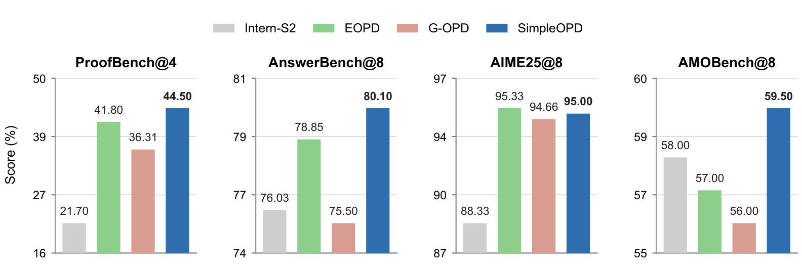
Figure 8 显示 SimpleOPD 在 ProofBench@4 达到 44.50，高于 EOPD 的 41.80 和 G-OPD 的 36.31；AnswerBench@8 为 80.10，高于 78.85 与 75.50；AMOBench@8 为 59.50，高于 57.00 与 56.00。AIME25@8 则是 95.00，略低于 EOPD 的 95.33，但高于 G-OPD 的 94.66。每个面板使用独立缩放 y 轴，因此视觉柱差不能跨面板比较，必须读柱顶数字。证据更准确的表述是“SimpleOPD 在四项中三项最好、在 AIME25 保持接近最佳”，而不是全面优于所有 OPD 变体。
SimpleOPD 最大优势集中在 ProofBench，这与训练数据全部是证明题、teacher SU-01 擅长自然语言证明一致。它的稳定化机制可能让更长的有效证明链被保留下来，但当前实验没有把“更高 lexical overlap”“更少截断”“更好 ProofBench”做中介分析，不能据此断言具体增益比例由哪一因素贡献。EOPD/G-OPD 的超参搜索预算是否完全等价也未在主文详列，是后续复现需要对齐的公平性条件。
3.5 对齐覆盖、域外泛化与蒸馏长度
部分 span 对齐是否有用，首先取决于 $\rho$。Figure 9 直接跟踪 Qwen3.5-35B-A3B、Intern-S2-Preview、GLM-4.7-Flash 三种学生的 lexical overlap。
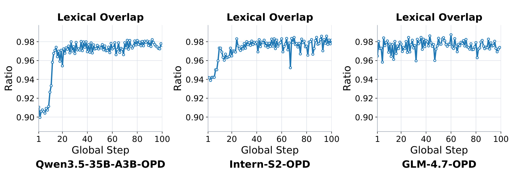
三条曲线在训练初期就处于较高区间：Qwen3.5 从约 0.90 快速升到 0.97 左右，Intern-S2 从约 0.94 上升，GLM 大多维持在 0.97 附近；之后虽有波动，整体仍接近 0.96-0.98。它说明自然语言文本中大量常见字符片段在不同 tokenizer 下仍会形成相同 span，SimpleOPD 没有丢失大多数学生 token 的监督。曲线也不能证明未对齐 token 不重要：少数数学符号、特殊格式或稀有词恰可能承载高价值推理步骤，平均覆盖率不会显示这些位置的语义权重。三种模型的早期爬升速度还不同，提示 overlap 本身会随学生生成分布改变，训练中应把它作为时序诊断量而非静态 tokenizer 相似度。
论文只用数学证明数据训练，却在科学推理上观察到一定域外改善。
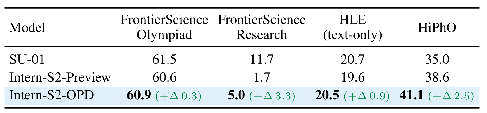
Table 3 中，Intern-S2-OPD 相比基座在 FrontierScience Olympiad 从 60.6 到 60.9，仅增 0.3；FrontierScience Research 从 1.7 到 5.0，增 3.3；HLE 从 19.6 到 20.5，增 0.9；HiPhO 从 38.6 到 41.1，增 2.5。HiPhO 还高于教师 SU-01 的 35.0，显示学生可能保留自身物理优势。四项都没有下降是积极证据，但三个绝对增益较小，而且未报告置信区间；更稳妥的结论是数学 OPD 没有破坏这些科学能力并可能带来有限迁移，而不是已经证明通用科学推理显著增强。尤其 FrontierScience Research 的基数很低，3.3 分增益不应与 ProofBench 的二十余分提升等量解读。
对长证明任务，蒸馏时允许学生看到多长响应也是核心变量。
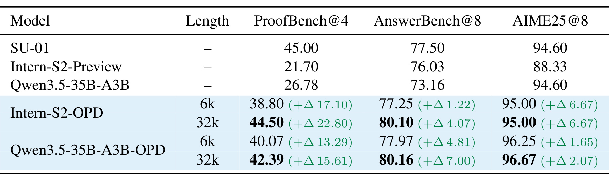
Table 4 中，Intern-S2-OPD 从 6k 增到 32k 后，ProofBench@4 由 38.80 升至 44.50，AnswerBench@8 由 77.25 升至 80.10，AIME25 保持 95.00；Qwen3.5-35B-A3B-OPD 的对应变化是 40.07→42.39、77.97→80.16、96.25→96.67。ProofBench 对长度最敏感，符合自然语言证明需要保存更多中间论证的直觉。与此同时，32k 会显著增加 teacher scoring、rollout 和显存成本，论文没有给出同等 token 预算下“更多 6k 样本”和“更少 32k 样本”的效率对照，所以目前只能说更长轨迹在其预算下更有效。AIME25 的近似饱和也说明长度收益依任务而异，短答案竞赛题未必需要同等扩展。
3.6 KL 系数、训练数据与可复现边界
GLM 消融说明 reference KL 并非越强越好。
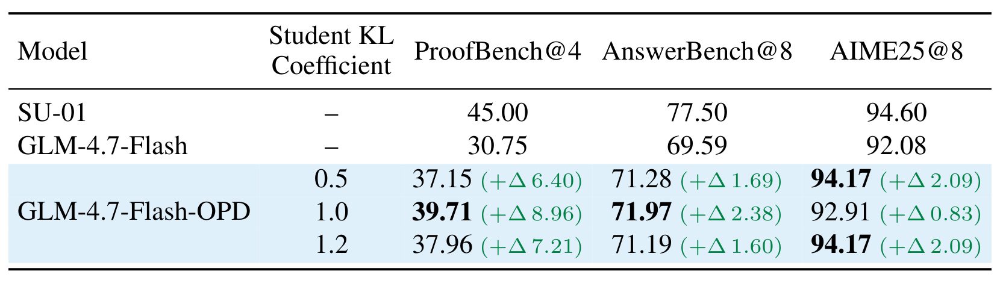
Table 6 中，系数 0.5、1.0、1.2 的 ProofBench@4 分别为 37.15、39.71、37.96，AnswerBench@8 为 71.28、71.97、71.19；1.0 在这两项上最平衡。AIME25 则是 0.5 与 1.2 都达到 94.17，1.0 为 92.91。不同指标的最优系数不一致，说明 reference KL 调节的是“保留学生原能力—吸收教师偏好”的 Pareto 权衡，而非一个统一单峰性能旋钮。论文据此为更大 teacher/student gap 使用更强正则，但上线或迁移到新家族时仍需要同时监控能力、长度、截断与重复率。
训练数据组成也有针对性。只用 proof data 时，Intern-S2-OPD 的 ProofBench@4 为 44.50；加入 SU-01 使用的可验证数学数据后降到 38.50。混合数据仅把 AnswerBench@8 从 80.10 小幅推到 81.10，AIME25 仍为 95.00。这表示更多任务并不自动带来更通用的迁移：可验证短答会稀释自然语言证明轨迹的训练密度。对于推荐或搜索场景也有类似警示，若把点击预测、解释生成、长序列规划混在一个 OPD batch，数据比例会改变教师信号最终集中在哪种行为上。
方法也不只绑定 SU-01。用 158B 的 DeepSeek-V4-Flash 作教师、6k 蒸馏 Intern-S2 时，ProofBench@4 从 21.70 到 39.71，AnswerBench@8 从 76.03 到 77.94，AIME25@8 从 88.33 到 97.50；同为 6k 时，ProofBench 还比 SU-01 教师的 38.80 高 0.91。这支持 teacher 可替换性，但教师规模、能力、服务成本和输出分布同时变化，不能把差值只归因于“更强 teacher”。仓库虽然提供 Slime/SGLang 实现和训练参数，完整复现仍需要 SU-01 或等价长上下文教师、昂贵的 HTTP scoring、32k rollout 和多次自动 judge，资源门槛不低。
4. 总结
4.1 我的判断与可迁移价值
SimpleOPD 最有价值的地方，是没有用复杂跨词表投影去“解决”一个本来就不唯一的概率分配问题。它承认异构 tokenization 只能部分严格比较，在共享表面字符串上保留确定匹配，再用训练动态证明实际 $\rho$ 足够高。这种保守设计可审计、线性复杂度、部署零增量，适合需要跨模型家族迁移能力的后训练系统。与此同时，论文把长度健康度提升到与 benchmark 同等重要的位置：终止 token masking 保护结束行为，reference KL 限制跨轮策略漂移，两者共同避免把长教师的偏好无条件灌给短学生。
对推荐系统的迁移不应直接理解为“拿推荐 LLM 做数学 OPD”，而是三条机制启发。其一，生成式排序、对话推荐或解释模型若 teacher/student tokenizer 不同，可以在候选 ID、结构标记和自然语言 span 上采用严格匹配监督，未匹配位置保持中性。其二，长用户历史教师向低延迟学生蒸馏时，也可能出现输出长度或工具调用次数膨胀，需要把延迟、截断、重复和结束行为加入训练监控。其三，reference KL 可以保护学生已有的个性化与校准能力，避免为追随强 teacher 而丢掉线上稳定性；但系数必须按任务指标和模型家族重新调节。
4.2 局限、风险与后续跟进
局限至少有五点。第一，span 完全一致才监督会系统性忽略切分差异最大的稀有符号、数学表达和多语文本，高平均 $\rho$ 不代表高价值 token 都被覆盖。第二，主要训练域只有数学证明，跨域科学增益较小且缺少置信区间，无法推出通用推理全面增强。第三，ProofBench 依赖 LLM judge，不同 judge 产生不同绝对分数；“超过闭源模型”必须绑定当前裁判口径。第四，reference KL 与 32k rollout 增加计算、显存和教师服务成本，论文没有给出完整吞吐、GPU-hour 或同 token 预算效率曲线。第五，termination masking 保护现有结束行为，却可能阻止教师纠正学生不理想的结束格式；Gemma AnswerBench 下降也表明跨家族迁移存在能力回退。
后续最值得做四项复现。第一，按 token 类型分解 $\rho$，单独统计数字、公式、中文、多语词与特殊 token，检查未对齐监督是否集中在关键推理位置。第二，做完整的 $2\times2$ 消融：有/无 termination masking 与有/无 reference KL，统一 seed、token 预算和 checkpoint selection，量化两者交互。第三，在同等生成 token 与 teacher scoring 成本下比较 6k/32k，报告吞吐、显存、截断和单位成本增益。第四，把评测扩展到代码、工具调用或生成式推荐，并同时追踪任务质量、输出长度、结束率与基座能力保留；只有这些指标共同稳定，才能判断 SimpleOPD 是否具备更广的工程适用性。
总体而言，论文证据足以支持“共享文本 span 的部分对齐可以让异构 tokenizer 的 OPD 可行，并且 reference KL 与终止 token masking 能显著改善当前长证明蒸馏的训练稳定性”。它尚不足以支持“跨 tokenizer 已无损”“长教师能力可低成本迁移”或“所有任务都会提升”。把这三条边界保留下来，SimpleOPD 才更像一套可复现的训练配方，而不是一句跨模型蒸馏口号。